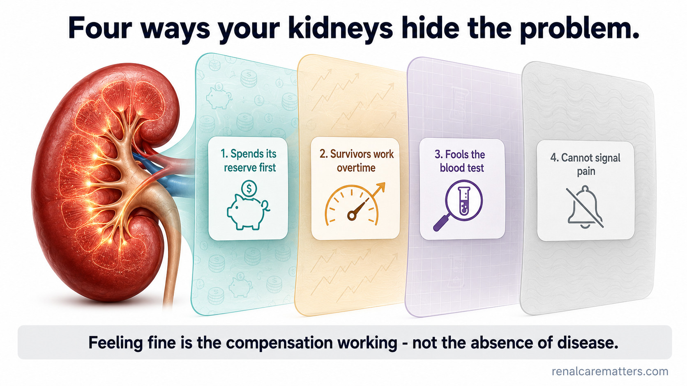
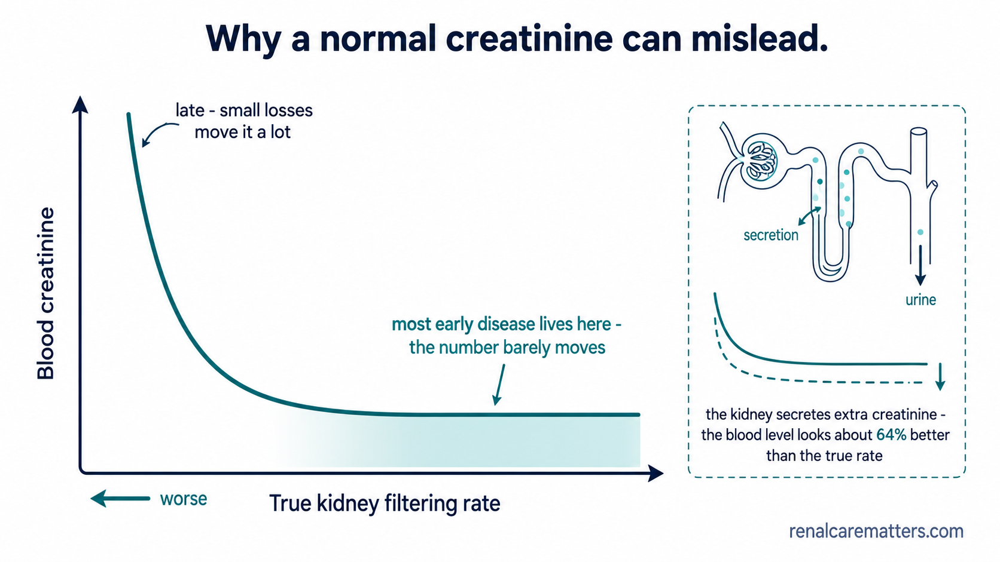
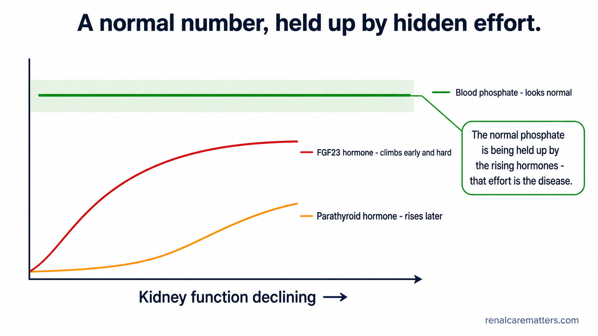
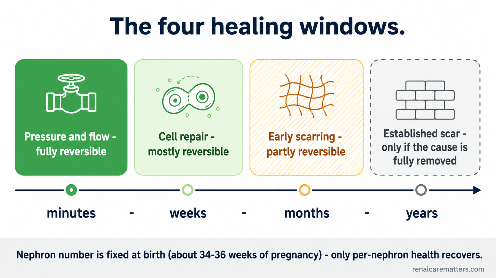
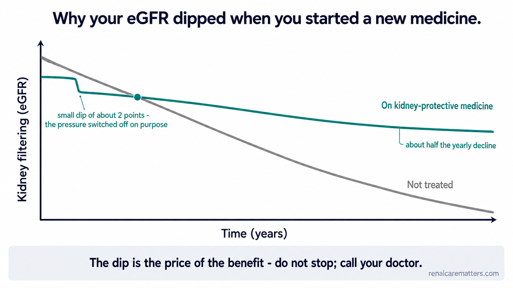
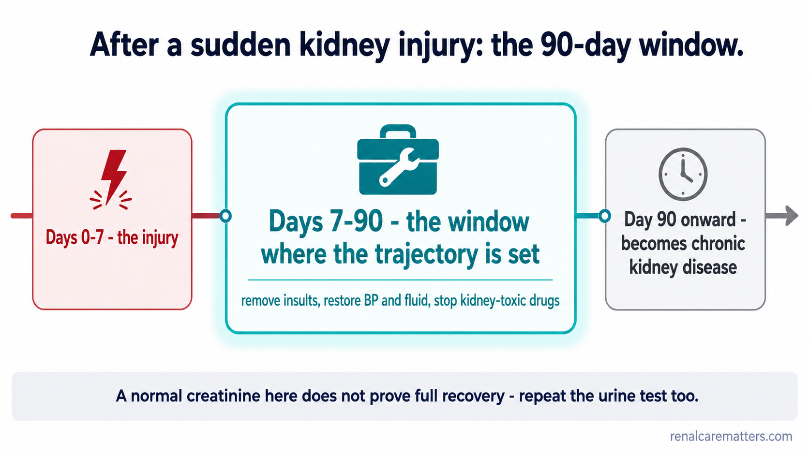

You feel fine. That is the disease, not the absence of it.
You can lose a large share of your kidney function and feel completely normal. Not because the damage is mild — because your kidneys are extraordinarily good at hiding it.
Kidneys don't fail the way a knee fails. They compensate. Every filter you still have works harder, filters faster, and takes on the share of the ones you've lost. Your blood test stays normal. You have no pain. You feel like yourself.
That compensation is real and it is remarkable. It is also the reason that, worldwide, around 87 out of every 100 people with kidney disease do not know they have it — and why about half of the people whose kidneys are likely to fail within five years have never been told anything is wrong.
Two questions, one answer
This guide answers two questions that turn out to be the same question. Why is it silent? And can any of it be healed? The answer to both is: because the kidney adapts. This is a guide about chronic kidney disease (CKD) — but really it is a guide about one talent the kidney has, seen from two sides.
Four ways your kidneys hide the problem
There is no single trick. The silence is built from four separate mechanisms, and they stack on top of one another. None of them means you were careless. They are simply how the organ is built.
1. It spends its savings first
Healthy kidneys hold a reserve — extra filtering capacity they use only when you need it, like after a large protein meal. As filters are lost, that reserve is quietly spent to keep your everyday numbers normal. By the time a blood test moves, the savings account is already empty. A normal creatinine can sit on top of kidneys already filtering flat-out.
2. The survivors work overtime
Each remaining filter increases its output and takes on a magnified share of the daily workload. Your blood levels look normal because the per-filter workload has become abnormal. This is the single most important sentence in this guide.
3. The blood test itself gets fooled
As disease progresses, the kidney tubules start actively pushing creatinine into the urine on top of filtering it. That extra push makes the blood level look better than the true filtering rate. The organ compensates on the very test we use to detect it.
4. It cannot send a pain signal
The filtering tissue of the kidney has essentially no pain nerves. Kidney pain comes from stretching, blockage, infection, or loss of blood supply — and slow kidney disease causes none of those; it makes the kidney smaller, not swollen. Meanwhile the body adapts to anaemia, acid buildup and high blood pressure so gradually that none of them feel like anything.
Key takeaway
Feeling fine is not evidence that nothing is wrong. It is evidence that the compensation is still working.

The four layers of concealment stack like veils over the kidney: the reserve is spent first, surviving filters magnify their output, the blood test is actively distorted, and there is no pain nerve to raise the alarm.
- GFR
- Glomerular filtration rate — how fast the kidneys clean blood.
Why a "normal creatinine" can be misleading
Creatinine is the number most people are shown. It has three specific weaknesses, and they stack.
It sits on a flat curve. The relationship between creatinine and the actual filtering rate is not a straight line. Early on, large losses of function move the creatinine barely at all; later, small losses move it a lot. Most of the early disease lives on the flat part — which is exactly why one creatinine value, read once, can correspond to a true filtering rate anywhere from roughly 30 to 90 on the scale doctors use.
The kidney fights the test. As disease worsens, the tubules secrete more and more creatinine directly into the urine. Researchers measured this against a true filtration marker and found creatinine clearance running about 64% higher than the real filtering rate. The kidney is, in effect, papering over its own result.
It depends on your muscle, not just your kidneys. Creatinine comes from muscle. If you are older, thin, have lost muscle, are vegetarian, or have had a limb amputated, you make less of it — and your estimated glomerular filtration rate (eGFR) looks better than it is. In large studies, 11% of outpatients and 35% of hospitalised patients had substantially worse kidney function on a muscle-independent test, cystatin C, than their creatinine suggested — and those people had meaningfully higher risk of dying.
Ask about cystatin C if this is you
If you are thin, elderly, have lost muscle, are vegetarian, or have had an amputation, ask your doctor whether a cystatin C test would give a truer picture. International guidelines specifically recommend it when creatinine is likely to mislead and the answer would change your care.
Go deeper: your normal is not the lab's normal
There is a useful nuance. Creatinine is unreliable when compared against the lab's population reference range — but it is considerably more informative when compared against your own previous values. This is why a trend across several tests is worth far more than any single result: the line, not the dot, is the signal.

Creatinine barely moves while true kidney function falls through its early range, then climbs steeply late. An inset shows the tubules secreting extra creatinine into the urine, flattening the early signal even further.
- eGFR
- Estimated glomerular filtration rate — the filtering-rate number calculated from a blood test.
Why this gets missed — and why it isn't your fault
If you are reading this after an unexpected result, you may be wondering how this went unnoticed. Three things are true at once, and none of them is a failure on your part or, in most cases, on your doctor's.
The disease is genuinely hard to see. In studies across five countries, the proportion of people with stage 3 kidney disease who had never received the diagnosis ranged from 64% in the United States to over 95% in France.
The people most likely to be missed are the ones who look healthiest. The strongest predictors of being overlooked were being female, being at the earlier end of stage 3, and not having diabetes or high blood pressure — in other words, having no obvious label that prompts anyone to test.
The test that would find it is rarely ordered. The urine albumin test — the urine albumin-to-creatinine ratio (uACR) — detects kidney damage while filtering is still normal. Among at-risk adults it is ordered about 17% of the time — around 52% in people with diabetes, but only about 5% in people with high blood pressure and no diabetes. For every person with hypertension whose albuminuria was detected, roughly 19 went undetected.
Invisible by design
Up to 40% of kidney disease shows up as protein in the urine while the filtering number is still perfectly normal. If nobody checks the urine, that disease is invisible by design — not because anyone was careless.
The hidden bill: why compensation is not the same as being fine
Here is the part that took nephrology decades to work out. Your kidneys keep your blood numbers normal — but not for free. They keep them normal by letting certain hormones rise, permanently, in the background. And those hormones have effects everywhere else in the body.
The clearest example is phosphate. Long before your phosphate level ever budges, a hormone called fibroblast growth factor 23 (FGF23) has already climbed sharply to force the kidney to dump more phosphate. Then vitamin D activation falls. Then parathyroid hormone (PTH) rises. Phosphate — the number on your lab report — moves last. In a study of nearly 4,000 people with kidney disease, high FGF23 was more common than any other bone-mineral abnormality at every level of kidney function, while phosphate and PTH still sat in the normal range.
The same bargain happens inside the filters themselves. To keep total filtering up, each surviving filter runs at higher pressure. That higher pressure damages the delicate cells lining it — which costs you more filters — which forces the survivors to work harder still. The compensation is the engine of the disease.
The line this whole guide turns on
Your normal result is not proof that nothing is happening. It is proof that something is working very hard to keep it normal — and the effort is itself the disease.
This is also why treatment aimed at "taking the pressure off" can look, on paper, like it is making things slightly worse at first. See the dip.

As kidney function declines from left to right, the blood phosphate line stays flat and inside the normal range, while the FGF23 line rises steeply beneath it and PTH rises later and more gently. The normal phosphate is being held up by the rising hormones — that effort is the disease.
- FGF23
- Fibroblast growth factor 23 — a hormone that makes the kidney excrete phosphate.
- PTH
- Parathyroid hormone — rises to help control calcium and phosphate.
The two tests that see through the silence
You now understand why these two tests, and not others. They are the two that do not lie flat.
Urine albumin (uACR) finds damage while filtering is still normal. It is the fastest-moving, most changeable kidney number you have, and it responds to treatment within weeks. Bringing it down by about a third is associated with roughly a fifth lower risk of ever reaching kidney failure.
eGFR trend — not a single eGFR. One value is a snapshot on a flat curve. A line across several values is the actual signal.
Cystatin C, when creatinine is likely to mislead you: thin, elderly, low muscle, amputation, or vegetarian.
Detection is not paperwork
In a large multinational study, simply having the diagnosis recorded was followed by the average rate of kidney decline falling from about 3.2 to 0.7 per year — because recording it changed what was prescribed and monitored. Each year of delay raised the risk of progression by about 40%.
Read more: Understanding CKD · Understanding Your Lab Results.
The good news hidden in the same physiology
Everything in the first half of this guide describes an organ that is relentlessly adaptive. That adaptability is why you felt fine. It is also, redirected, why kidney disease is more treatable now than at any point in medical history.
Doctors borrowed the word plasticity from the study of the brain: an organ's ability to change its structure and function in response to what happens to it. Kidneys do this in three ways.
Adaptation
Survivors grow and work harder. This is what hid the disease — but it is also a genuine capacity that can be pointed the other way.
Repair
Injured tubule cells can rebuild themselves. This is why many people recover fully from a sudden kidney injury.
Regression
Under the right conditions, damage already laid down can partly unwind. Protein leak falls; scar tissue is remodelled. This is the rarest and slowest form, and it requires the original cause to be genuinely removed.
The four healing windows
| Window | How fast | Can it reverse? | What's happening | What you might notice |
|---|---|---|---|---|
| 1. Pressure and flow | Minutes to weeks | Fully | Vessels feeding each filter tighten or relax | eGFR dips when you start a kidney medicine, then holds steady |
| 2. Cell repair | Weeks to months | Mostly | Injured lining cells rebuild themselves | Recovery after a sudden kidney injury |
| 3. Early scarring | Months to years | Partly | Cells that never finished repairing keep signalling for scar | Your rate of decline slows or flattens |
| 4. Established scar | Years | Only if the cause is completely gone | Mature scar slowly remodelled | Rare, and documented only when the underlying disease was fully removed |
Key takeaway
Windows 1 and 2 close fast — which is why the weeks after a sudden kidney injury matter so much. Windows 3 and 4 stay open for years — which is why staying on treatment matters more than starting it quickly.
Four claims, each with its condition attached — because a plasticity claim without its condition is a false promise:
| Claim | What happened | The condition |
|---|---|---|
| Protein leak can regress | In people with type 1 diabetes and early protein leak, regression occurred with a six-year cumulative incidence of 58% — best in those with better sugar, blood pressure and cholesterol | Lower risk, not a guarantee that filtering is safe |
| Scarring can be remodelled | Eight people with type 1 diabetes received a pancreas transplant. Biopsies at 5 years showed no improvement; at 10 years the damage had substantially reversed, and urine albumin fell from about 103 to 20 mg/day | It took more than five years of normal blood sugar — and filtering still declined even as structure improved |
| Kidneys can come off dialysis | A meaningful share of people who needed dialysis for a sudden kidney injury regain independence, many within the first months | Far less likely if the kidneys were already damaged beforehand |
| Decline can be more than halved | Modern treatment routinely cuts the yearly rate of decline by roughly half | The benefit fades within about 6–12 months if the medicine is stopped — maintenance, not cure |

A timeline from minutes to years: four healing windows shade from solid (fully reversible pressure-and-flow) to dashed (established scar, reversible only if the cause is completely removed). A footer strip marks the one thing that never changes: nephron number is fixed at birth.
What cannot come back — and why saying so matters
Your kidneys finished building their filters before you were born, at around 34 to 36 weeks of pregnancy. After that, no new ones are ever made. People differ enormously in how many they started with — low birth weight and prematurity mean a smaller allowance and less margin.
So treat "kidney damage can be reversed" carefully. Lost filters do not come back. What can come back is how well the remaining ones work, how much they leak, and how much scar sits between them. That is not a small thing. It is the difference between reaching dialysis in eight years and not reaching it at all.
Be sceptical of "regeneration"
Be sceptical of any product, supplement or programme claiming to "regenerate" or "rebuild" kidneys. No supplement has ever been shown to grow a nephron. Some actively harm kidneys. See Stem Cells & CKD for what the real science does and does not show.
Why your eGFR fell when you started a new medicine
Remember the bargain from earlier: your surviving filters keep the total up by running at high pressure, and that pressure is damaging them. Kidney-protective medicines — sodium-glucose cotransporter-2 inhibitors (SGLT2i) like empagliflozin and dapagliflozin, angiotensin-converting enzyme inhibitors (ACEi) and angiotensin receptor blockers (ARB), and the mineralocorticoid receptor antagonist (MRA) finerenone — deliberately take that pressure off.
So your eGFR steps down slightly, because it was being artificially propped up. And then it declines far more slowly from there. In the largest trial of empagliflozin in kidney disease, that step-down averaged about 2 points, and afterwards the yearly rate of decline was roughly halved.
The dip is the price of the benefit. It is the compensation being switched off on purpose.
Do not stop a kidney medicine because your eGFR dipped
Call your doctor instead. A drop of more than about 30%, or a rise in potassium, does need review. Have your blood rechecked at the interval your doctor set — usually 2 to 4 weeks after starting or changing a dose.
Go deeper: a pressure reset, not injury
This is a pressure reset, not damage. In trials where researchers measured markers of actual tubular injury during a similar drop caused by intensive blood-pressure treatment, those damage markers did not rise. The number changed; the tissue did not.

Treated versus untreated eGFR over three years. The treated line dips at the start, then declines slowly; the untreated line starts higher but falls faster. They cross — and the treated kidney ends ahead. The early dip is the cost of the later gain.
- eGFR
- Estimated glomerular filtration rate — the calculated filtering-rate number.
- SGLT2i
- Sodium-glucose cotransporter-2 inhibitor — a kidney-protective medicine.
The five levers you control
Your medicines
They take pressure off the filters and cut protein leak. The biggest single lever, and the one most often abandoned over a misread lab result. Never stop a kidney medicine without talking to your doctor.
What you eat
Sodium, ultra-processed food and protein load all change filter pressure. Cut processed food first, before worrying about individual nutrients.
How you move
Muscle and kidney talk to each other chemically. Work toward 150 minutes a week of moderate activity plus strength work twice weekly, scaled to what you can sustain.
Weight, sleep and smoking
Each independently changes filter pressure and inflammation. Stop smoking and vaping; treat weight and sleep as kidney issues.
Avoiding new hits
Every episode of sudden injury, every non-steroidal anti-inflammatory drug (NSAID) course, every avoidable dehydration costs filters permanently. Know your NSAID rules and sick-day rules. See Kidney Injury from NSAIDs.
Food and movement, with the mechanism
Ultra-processed food first. Before any single nutrient, the biggest win is cutting ultra-processed food — it carries hidden sodium and, importantly, additive phosphate and potassium that are absorbed almost completely.
Protein, with its counterweight. Very high protein loads raise filter pressure, but cutting protein too far causes muscle loss — and people with kidney disease already lose muscle easily. The target is moderation with enough protein to protect muscle, set with a dietitian, not a crash restriction.
Plant-dominant eating; potassium — restrict the additive, liberalise the plant. Potassium from whole plants arrives with fibre and natural base and is only partly absorbed; potassium added to processed food is absorbed almost fully. A blanket "avoid all high-potassium fruit and vegetables" is usually the wrong instruction. Sodium and acid load both matter, and base-producing foods (fruit and vegetables) help buffer the acid of kidney disease.
Movement. Aim toward 150 minutes a week of moderate activity plus strength work twice weekly. One caveat worth knowing: a hard workout in the day or two before a blood test can transiently raise creatinine and make your eGFR look worse than it is — a reason cystatin C is useful when your muscle mass is changing.
Potassium, salt substitutes and bicarbonate — check first
Do not start potassium-rich eating, salt substitutes, or bicarbonate on your own if your eGFR is below 30 or you take an ACEi, ARB, or finerenone. Salt substitutes are potassium chloride.
After a sudden kidney injury: the 90-day window
Specialists divide the aftermath into windows. The first 7 days is the acute kidney injury (AKI) itself. Days 7 to 90 is where the trajectory is set — this stretch is called acute kidney disease (AKD). After 90 days, whatever remains counts as CKD.
During that window the injured tubule cells are effectively deciding whether to finish rebuilding or settle into a permanently inflamed, scar-promoting state. Removing ongoing insults, restoring blood pressure and fluid balance, and stopping kidney-toxic drugs is not just supportive care — it is the intervention.
Your 90-day checklist
- Repeat creatinine and uACR between weeks 3 and 12
- Review every medicine for kidney toxicity
- Confirm blood pressure and fluid status are back to baseline
- Ask whether you need nephrology follow-up
- If you needed dialysis, ask directly: "What is my chance of coming off, and when will we reassess?"
An honest note
A normal creatinine after a kidney injury does not prove full recovery — the reserve may be gone even when the number looks fine. And while the case for structured follow-up after kidney injury is strong, it rests mainly on mechanism and observational data: randomised trials have so far shown better blood-pressure control and lower protein leak rather than proven better long-term kidney survival. We recommend follow-up because the reasoning and the real-world signal are both strong — not because a trial has settled it.

The aftermath of a sudden kidney injury in three bands: the first 7 days is the injury; days 7–90 (highlighted) are the window where follow-up changes the trajectory; after 90 days, what remains is chronic kidney disease.
- AKI
- Acute kidney injury — a sudden drop in kidney function.
- AKD
- Acute kidney disease — the 7-to-90-day recovery-or-scar window.
- CKD
- Chronic kidney disease.
What to track — and the tools to do it
Because you cannot feel this disease, the numbers are your only honest feedback. Track the trend, not any single value.
| What to track | Why |
|---|---|
| eGFR slope (not single values) | The line across several tests is the real signal; one dot sits on a flat curve |
| uACR | The fastest-moving number, and the one you can actually move |
| Potassium | Safety check on kidney-protective medicines |
| Properly-measured blood pressure | Rested, seated, correct cuff — not a rushed clinic reading |
| Weight | Sudden gain can mean fluid retention |
| Cystatin C | When your muscle mass is changing and creatinine may mislead |
Red flags — when to seek care now
Call your doctor or go in if you have any of these
An eGFR fall of more than about 30% after a medicine change · symptoms of high potassium (muscle weakness, an irregular or slow heartbeat) · a sudden change in how much you urinate · rapid swelling or breathlessness · visible blood in the urine. And know your sick-day rules: on days of vomiting, diarrhoea or fever, ask whether to pause certain medicines and how to stay hydrated.
Questions to ask your doctor
- Has anyone ever checked my urine for protein (a uACR)?
- Should I have a cystatin C test given my body size and muscle mass?
- What is my eGFR trend over the last few tests — not just today's number?
- Am I on the medicines that take pressure off my filters, and is the dose right?
- If my eGFR dipped after a new medicine, is that the expected effect or too much?
- If I had a kidney injury, what is my follow-up plan for the next 90 days?
Frequently asked questions
Reading this as a clinician?
This page has a specialist companion covering the intact-nephron and trade-off hypotheses, the creatinine-hypersecretion data, eGFRcr–eGFRcys discordance, the plasticity axes, and the detection-gap evidence with full citations and algorithms: The Silent Kidney: Compensation, Concealment, and Renal Plasticity →